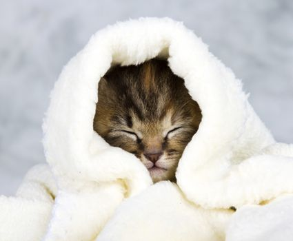

Health


Domestic kittens in developed societies are usually vaccinated against common illnesses from two to three months of age. The usual combination vaccination protects against feline viral rhinotracheitis (FVR), feline calicivirus (C), and feline panleukopenia (P). This FVRCP inoculation is usually given at eight, twelve, and sixteen weeks, and an inoculation against rabies may be given at sixteen weeks. Kittens are usually spayed or neutered at seven months of age, but kittens may be neutered as young as seven weeks (if large enough), especially in animal shelters. Such early neutering does not appear to have any long-term health risks to cats, and may even be beneficial in male cats. Kittens are commonly given deworming treatments for roundworms from about four weeks.